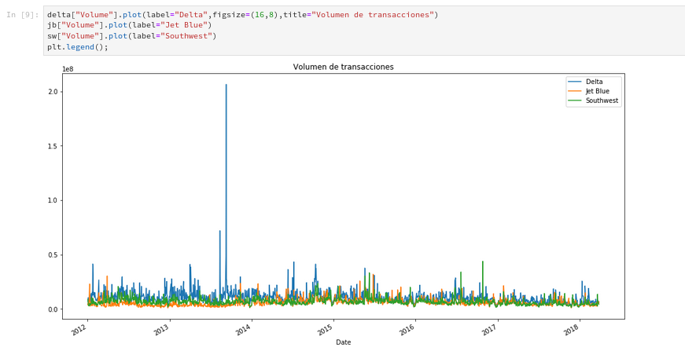

En este artículo la fuente de datos se usará la librería de Quandl directamente. La idea es obtener los precios de mercado de 3 Aerolineas (Delta con código DAL, Jet Blue con código JBLU y Southwest con código LUV). Se gráfica el historico de los precios de cierre, el volumen de ventas y movimientos promedios de estas tres aerolineas.
Continuando con los artículos sobre Pandas y Ciencia de DatosData Science, en el artículo anterior se mostró como trabajar con Series de tiempo obteniendo datos desde Quandl.
Este artículo se basa en un artículo en inglés que se títula Visualizing Time Series Data of Stock Prices (en este artículo usan la librería pandas_datareader, pero está dando errores, así que se usará la librería Quandl).
El código del ejercicio se muestra a continuación:


Visualizando
Graficar Ajuste de precio de cierre
Se va a graficar el Ajuste de precio de cierre de las 3 aerolineas.

Graficar el Volumen (Volume)

Se puede notar que la aerolinea Delta tiene un pico muy alto en algún momento del año 2013. Para obtener la fecha se usa el método idxmax.

Movimientos promedios MA
Los movimientos promedios se usan para detectar oportunidades de trading. Este cálculo se toma de la media o promedio de los pasados precios (se llama movimientos promedio por que los datos están continuamente moviéndose). Dependiendo del tipo de inversor (alto riesgo vs bajo riesgo, corto término vs largo término), se pueden ajustar los movimientos promedio a 10 días, 20 días, 50 días, 200 días, 1 año, 5 años, etc. Para este caso se calculará el movimiento promedio a 50 días y a 200 días.

El raw del notebook lo pueden bajar del repositorio gitlab.
Si tienes alguna sugerencia o idea de como se puede aplicar este artículo, lo puedes dejar en los comentarios.
¡Haz tu donativo! Si te gustó el artículo puedes realizar un donativo con Bitcoin (BTC) usando la billetera digital de tu preferencia a la siguiente dirección: 17MtNybhdkA9GV3UNS6BTwPcuhjXoPrSzV
O Escaneando el código QR desde la billetera:

Comments !